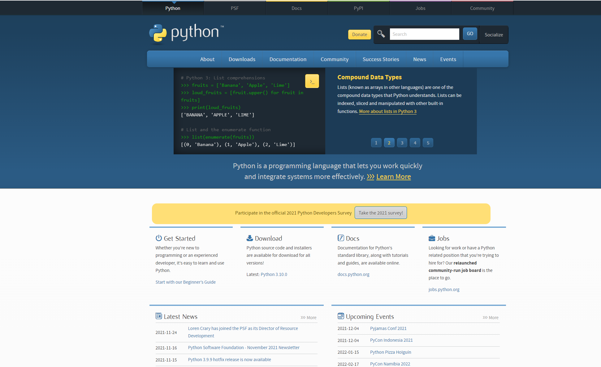
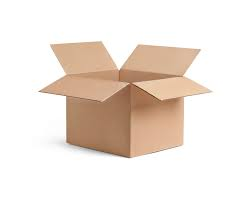

파이썬 맛보기
배우기 앞서 파이썬 코드가 어떤 모습인지 볼까
우선 파이썬을 다운받아보자

파이썬 공식 홈페이지( http://python.org ) 여기 들어가서 다운받아도 되고, 개발프로그램 같은 걸 써보고 싶으면 통합개발환경(IDE) 파이참(https://www.jetbrains.com) 에서 무료로
다운 받을 수 있어.
자 다운받았으면, 덧셈뺄셈부터 해볼까
파이썬은 인터프리터에서 한 줄씩 실행하고 결과를 보는 것이 가능한데, 한 번 쳐볼까?
# 1+2 를 치고 엔터를 쳐보자!
1+2
# 987 - 321 를 치고 엔터
987-321
# 987654321*9 를 치고 엔터
987654321*9
변수
프로그래밍에서 변수는 변하는 수인데 나는 이것을 "이름이 있는 상자" 라고 비유하고 싶어

상자 안에는 다양한 것을 담을 수 있지? 파이썬에서도 이 변수에 다양한 "값" 을 담을 수가 있어.
예를 들어
a = 1
b = 2
c = 3
- a 라는 이름을 가진 상자에 1 이라는 값이 들어가게 되는 것이고
- b 라는 이름을 가진 상자에 2 라는 값이 들어가게 되는 것이고
- c 라는 이름을 가진 상자에 3 이라는 값이 들어가게 되는 것이지.
참고로 대부분의 프로그래밍언어에서 '=' 기호는 수학에서의 '=' 과 달라.
수학에서 '=' 기호는 "같다" 를 의미 하잖아. 하지만 프로그래밍에서는 "대입" 을 의미해
그러니까 a=1 이라는 문장은 a 라는 변수에 1이라는 값을 대입한다. 라는 의미야.
변수는 이렇게 값을 담는 것 뿐만 아니라 다른 활용도 가능한데
d = a + 1 # d = a + 1 = 1 + 1 = 2
e = b*2 # e = b*2 = 2*2 = 4
f = a+b # f = a + b = 1 + 2 = 3
d = a +1 이것만 보자. d 가 a+1 인데, a 라는 변수의 값이 1 이였지? 그래서 d 가 2가 되는 거야. 굉장히 직관적이지?
이렇게 변수는 값을 담을 뿐만 아니라 담긴 값을 활용할 수 도 있는 것을 알 수 있어.
그런데 이런 의문이 생길 수도 있어. a 가 1이니까 처음부터 그냥 d = 1 + 1 이렇게 쓰면 되지 않나요?
몰론 여기서는 그렇지. 하지만 만약 a 가 1 에서 2 로 변한다면? 그러면 d = 2 + 1 이렇게 바꿔야 겠지? 근데 또 a 가 100 이 된다면? 그 때 또 d = 100 + 1 이렇게 바꿔줘야 겠지.
이렇게 한 부분이 변했을 때 그것에 종속되는 부분을 전부바꿔줘야 한다면 너무 귀찮은 일일 거야. a 가 변한다면 d 도 변하고 f 도 변하잖아. 또 코드가 정말 길다면 그리고 a가 쓰이는 곳이 정말 많은데 전부 바꾸다가 실수를 한 번이라도 한다면 버그가 생기고 말거야.
바로 이것이 변수를 쓰는 정말 다양한 이유 중 1가지 라고 할 수 있지.
주석이란? (# 기호)
참고로 파이썬에서 주석 기호가 '#' 인데 프로그래밍에서 주석이 뭐냐면 실행하지 않는 문장 이라는 뜻이야
# 이 문장은 실행되지 않습니다.
print(1) # print(2)
# 1 은 출력되지만 2 는 출력되지 않습니다.
실행도 되지 않는데 왜 쓰냐고? 그건 나중에 코드를 봤을 때 이해가 되지 않을 수 있으니까 추가적인 설명을 위해서 적어놓는 거야
실제 산업에서는 코드 길이가 몇백 줄 몇천 줄 을 가뿐히 넘길텐데 그 쯤이면 코드를 작성한 사람도 까먹기 때문에 주석을 적는 거라고 보면 돼
정리
- 변수는 이름을 가진 상자이고 그 안에 값을 담고 있다.
- 변수에 값을 담을 수도 있고, 담긴 값을 활용 할 수도 있다.